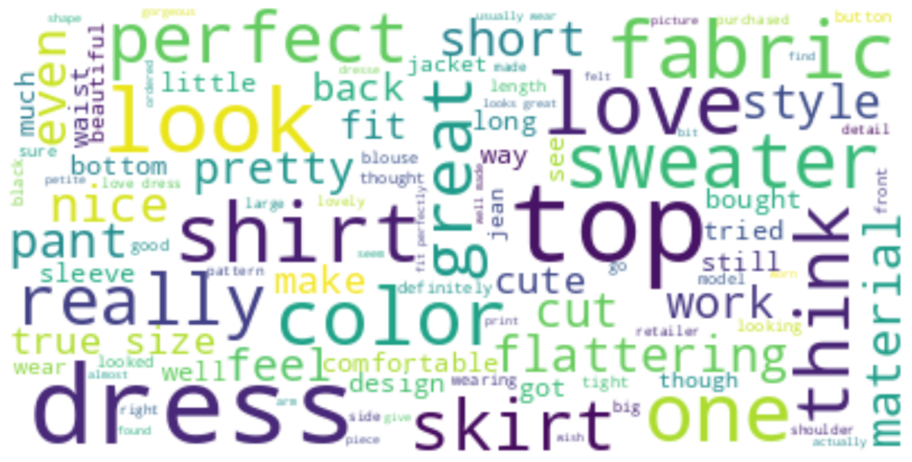
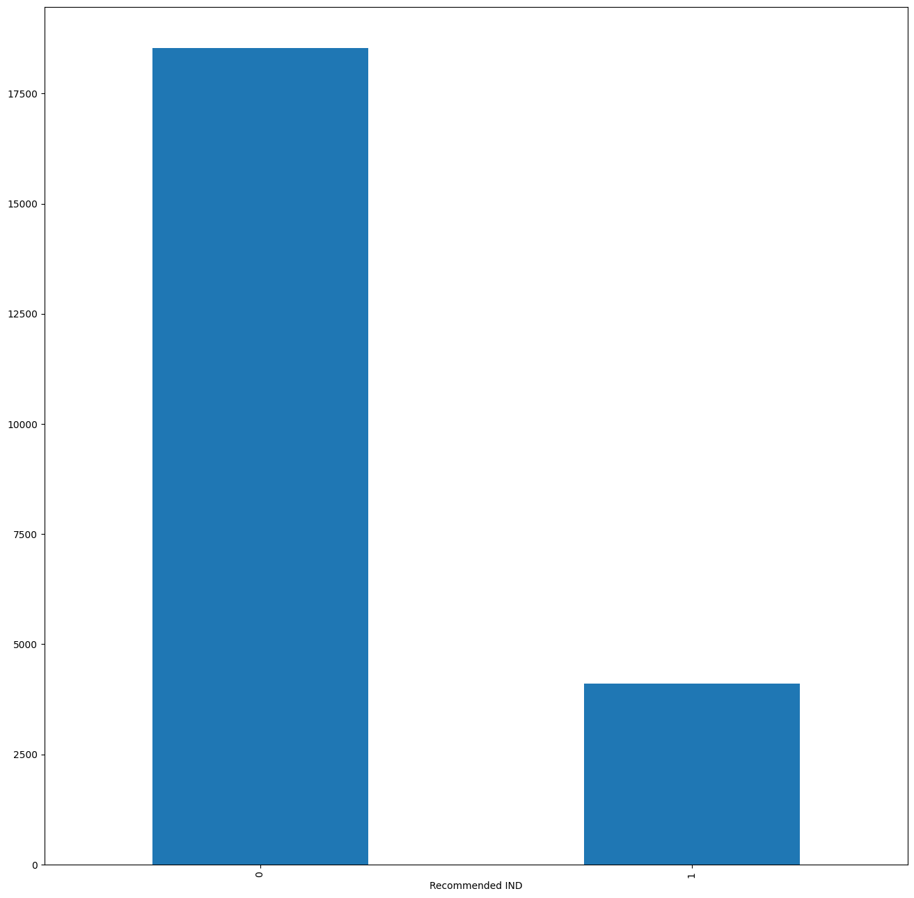
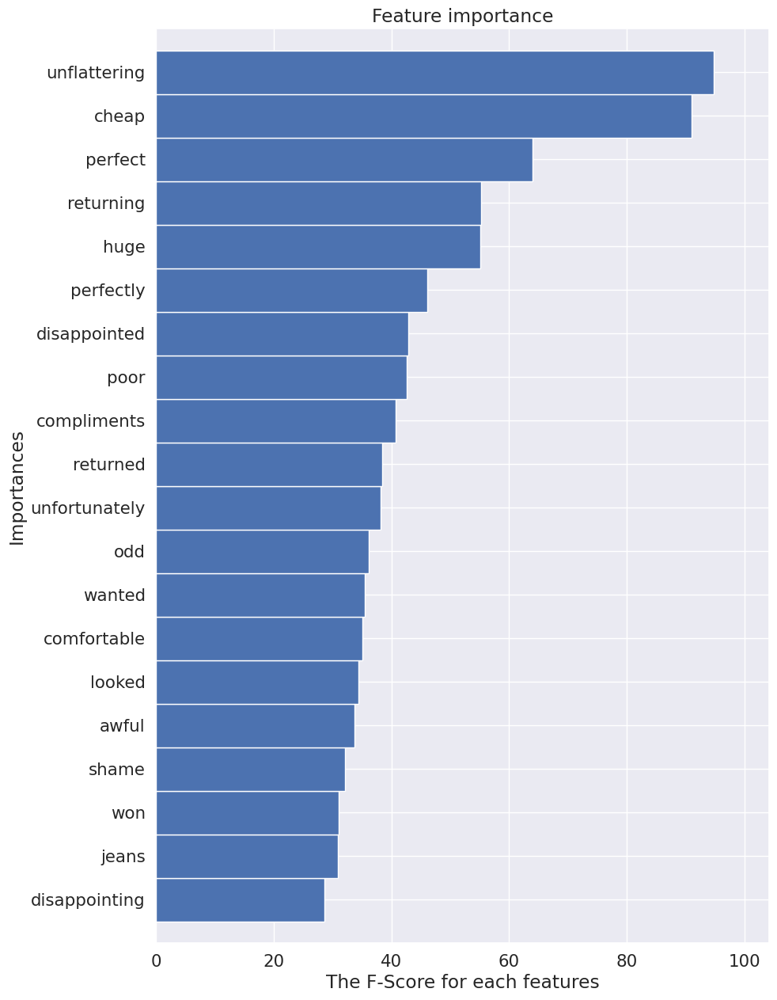
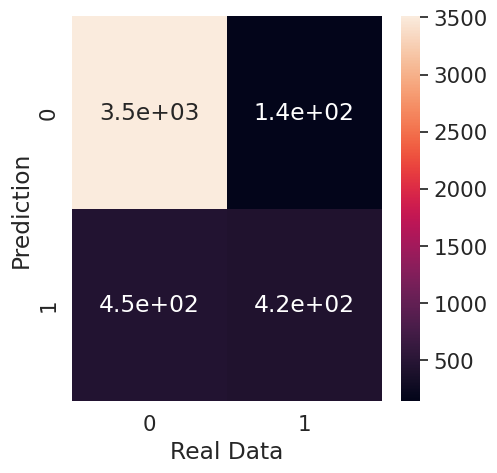

🪢데이터 출처
https://www.kaggle.com/datasets/nicapotato/womens-ecommerce-clothing-reviews
📌프로젝트 개요
- 지그재그, 에이블리, 브랜디 등을 자주 이용하는 팀원과 함께 익숙한 도메인으로 자연어 처리를 시도해보고자 시작
➡️ 작성한 리뷰가 해당 제품을 추천하는 리뷰인지, 비추천하는 리뷰인지 예측해보는 분류모델로 구현해보기
- 목표: 상품 리뷰 데이터 분석을 통해 상품 추천 여부(0, 1)을 예측하는 분류 모델 수행
- 순서
1. 데이터 확인 → 2. 데이터 결측치 처리 → 3. 데이터 시각화: 워드 클라우드 → 4. 데이터 전처리: 자연어 전처리(TF-IDF), 학습셋vs테스트셋 분리 → 5. 머신러닝 모델 학습 → 6. 평가 및 예측
1. 데이터 확인
-
코드
```python
import numpy as np
import pandas as pd
import matplotlib.pyplot as plt
import seaborn as sns동일한 결과를 위해 시드값 고정
np.random.seed(42)
df_origin = pd.read_csv("/Womens Clothing E-Commerce Reviews.csv")
df_origin.head()
```Unnamed: 0.1 Unnamed: 0 Clothing ID Age Title Review Text Rating Recommended IND Positive Feedback Count Division Name Department Name Class Name 0 0 0 767 33 NaN Absolutely wonderful - silky and sexy and comf... 4 0 0 Initmates Intimate 1 1 1 1080 34 NaN Love this dress! it's sooo pretty. i happene... 5 0 4 General Dresses 2 2 2 1077 60 Some major design flaws I had such high hopes for this dress and reall... 3 1 0 General Dresses 3 3 3 1049 50 My favorite buy! I love, love, love this jumpsuit. it's fun, fl... 5 0 0 General Petite Bottoms 4 4 4 847 47 Flattering shirt This shirt is very flattering to all due to th... 5 0 6 General Tops -
info() 확인
→ Unnamed, unnamed는 필요없는 칼럼. (인덱스임)
→ Title이랑 Review Text로 Recommend IND (0,1)을 예측해보는 모델 설계!
<class 'pandas.core.frame.DataFrame'>
RangeIndex: 23486 entries, 0 to 23485
Data columns (total 12 columns):
# Column Non-Null Count Dtype
--- ------ -------------- -----
0 Unnamed: 0.1 23486 non-null int64
1 Unnamed: 0 23486 non-null int64
2 Clothing ID 23486 non-null int64
3 Age 23486 non-null int64
**4 Title 19676 non-null object
5 Review Text 22641 non-null object**
6 Rating 23486 non-null int64
**7 Recommended IND 23486 non-null int64**
8 Positive Feedback Count 23486 non-null int64
9 Division Name 23472 non-null object
10 Department Name 23472 non-null object
11 Class Name 23472 non-null object
dtypes: int64(7), object(5)
memory usage: 2.2+ MB
- describe 확인
| Unnamed: 0.1 | Unnamed: 0 | Clothing ID | Age | Rating | Recommended IND | Positive Feedback Count |
|---|---|---|---|---|---|---|
| count | 23486.000000 | 23486.000000 | 23486.000000 | 23486.000000 | 23486.000000 | 23486.000000 |
| mean | 11742.500000 | 11742.500000 | 918.118709 | 43.198544 | 4.196032 | 0.177638 |
| std | 6779.968547 | 6779.968547 | 203.298980 | 12.279544 | 1.110031 | 0.382216 |
| min | 0.000000 | 0.000000 | 0.000000 | 18.000000 | 1.000000 | 0.000000 |
| 25% | 5871.250000 | 5871.250000 | 861.000000 | 34.000000 | 4.000000 | 0.000000 |
| 50% | 11742.500000 | 11742.500000 | 936.000000 | 41.000000 | 5.000000 | 0.000000 |
| 75% | 17613.750000 | 17613.750000 | 1078.000000 | 52.000000 | 5.000000 | 0.000000 |
| max | 23485.000000 | 23485.000000 | 1205.000000 | 99.000000 | 5.000000 | 1.000000 |
2. 데이터 결측치 처리: Outlier
- 의미없는 변수 삭제:
df_origin.drop(columns = ['Unnamed: 0', 'Unnamed: 0.1'])
→ 새롭게 만든 df_clean 데이터 프레임으로 시작
- 결측치 갯수 확인:
df_clean.isnull().sum()
Clothing ID 0
Age 0
Title 3810
**Review Text 845**
Rating 0
Recommended IND 0
Positive Feedback Count 0
Division Name 14
Department Name 14
Class Name 14
dtype: int64
Title, Review text에 결측치 좀 있고, 아래 3개 14개 있음.
- 자연어 전처리를 해보는 게 목표인 프로젝트 이기에 결측치는 삭제 함.
df_clean[~df_clean['**Review Text**'].isnull()] - 결측치 삭제 후 재확인
Clothing ID 0
Age 0
Title 2966
**Review Text 0**
Rating 0
Recommended IND 0
Positive Feedback Count 0
Division Name 13
Department Name 13
Class Name 13
dtype: int64
Review Text 삭제 했음.
3. 데이터 시각화: 워드 클라우드
-
코드
```python
import nltk
from nltk.corpus import stopwords
from nltk import sent_tokenize, word_tokenize
from wordcloud import WordCloud, STOPWORDS, ImageColorGenerator
from collections import Counter
from nltk.tokenize import RegexpTokenizer
import reReview Text 전에 Title로 시도해보기
df_clean_title = df_clean[~df_clean['Title'].isnull()]
띄어쓰기 단위로 글자 가져오기
tokens = re.findall("[\w']+", df_clean_title['Title'].str.lower().str.cat(sep=' '))
df_clean_title['Title'].str.lower().str.cat(sep=' ')
불용어 처리 하는 패키지 다운받기
nltk.download('stopwords')
영어 데이터라서 영어 불용어 처리하는 stopwords 가져오기
en_stops = set(stopwords.words('english'))
tokens에서 불용어에 해당하지 않는 단어를 저장해
filtered_sentence에 저장
filtered_sentence = [token for token in tokens if not token in en_stops]
출력사이즈 설정
plt.rcParams['figure.figsize'] = (16, 16)
워드 클라우드 저장 및 출력
wordcloud = WordCloud(max_font_size=50, max_words=100,background_color="white").generate(' '.join(filtered_sentence))
plt.imshow(wordcloud,interpolation="bilinear")
plt.axis("off")
plt.show()```
-
Title 데이터 워드 클라우드
📌 re.findall(): 띄어쓰기 단위로 단어를 가져오는 메서드!
Ex. df_clean_title['Title'].str.lower().str.cat(sep=' ')
=>'some major design flaws my favorite buy! flattering ….’
⇒ 띄어쓰기 단위로 만들었음
⇒ 이걸 findall()에 대입해서 사용
- tokens 확인
→ 잘 출력되는 거 확인
['some',
'major',
'design',
'flaws',
'my',
'favorite',
'buy',
'flattering',
'shirt',
'not',
'for',
'the',
'very',
'petite',
'cagrcoal',
'shimmer',
'fun',
....
]
- 불용어 처리
📌 tokesn에서 stopwords(불용어 처리 메서드)에 해당되지 않는 단어를 따로 저장하면 → 불용어가 아닌 쓸모 있는 단어들만 채택됨.
filtered_sentence = [token for token in tokens if not token in en_stops]
en_stops → 여기에 불용어가 저장됨. a, an, the, all, am 등
- Title 워드 클라우드 확인 !

→ Love, Beautiful, pretty, perfect, dress, cute가 크게 보임 ⇒ 많이 쓰인다는 뜻.
Review Text에 적용하기
-
코드
```python
tokens = re.findall("[\w']+", df_clean['Review Text'].str.lower().str.cat(sep=' '))filtered_sentence = [token for token in tokens if not token in en_stops]
plt.rcParams['figure.figsize'] = (16, 16)
wordcloud = WordCloud(max_font_size=50, max_words=100, background_color="white").generate(' '.join(filtered_sentence))
plt.imshow(wordcloud,interpolation="bilinear")
plt.axis("off")
plt.show()
```

→ 뭔가 Title이랑 비슷해보임?
→ Top, dres, look, skirt, fabric, 등이 보임.
추천하는지, 안하는지 → Recommended IND 0, 1 분포 확인
-
코드
```python
막대그래프로 출력
df_clean['Recommended IND'].value_counts().plot(kind='bar')
df_clean['Recommended IND'].value_counts()
```
Recommended IND
0 18540
1 4101
Name: count, dtype: int64

→ 데이터 불균형이 있는 상태임. 이 상태로 하면 머신러닝 모델의 성능이 떨어지겠지만 그래도 자연어 전처리를 시도해보는 게 이 프로젝트의 의의니까 그냥 패스하기로 함.
4. 데이터 전처리 - (1) 자연어 전처리: TF-IDF
📌 자연어 데이터 → 머신러닝 입력값으로 바꿔줘야 함.
자연어 빈도 기반으로 → 수치로 변환한다는 뜻!
from sklearn.feature_extraction.text import TfidfVectorizer
# 객체 불러오기, 불용어처리는 영어로
vectorizer = TfidfVectorizer(stop_words = 'english')
# Review Text 전부 소문자로 -> 그 다음 TF-IDF 적용하기
X = vectorizer.fit_transform(df_clean['Review Text'].str.lower())
X.shape
(22641, 13855)
y값 설정
y = df_clean['Recommended IND']
y = y.to_numpy().ravel()
# 1 차원 벡터 형태로 출력하기 위해 ravel 사용
y
→ array([0, 0, 1, ..., 1, 0, 0])
4. 데이터 전처리 - (2) 학습셋 vs 테스트셋
-
train_test_split
```python
from sklearn.model_selection import train_test_split
x_train, x_test, y_train, y_test = train_test_split(X, y, test_size = 0.2, random_state = 0)```
5. 머신러닝 모델 학습
DecisionTreeClassifier
-
코드
```python
from sklearn.tree import DecisionTreeClassifier
model = DecisionTreeClassifier()
model.fit(x_train, y_train)print(model.score(x_train, y_train))
print(model.score(x_test, y_test))
```
Accuracy
1.0
0.8039302274232722
→ 과적합이 일어남. 데이터 불균형때문에 어쩔 수 없다고 판단함.
- 나머지 모델 한번에 학습하기
KNN, MultinomialNB, BernoulliNB, RandomForestClassifier, SVC, XGB 시도
-
코드
```python
from sklearn.neighbors import KNeighborsClassifier
from sklearn.naive_bayes import MultinomialNB
from sklearn.naive_bayes import BernoulliNB
from sklearn.ensemble import RandomForestClassifier
from sklearn.svm import SVC
import xgboost as xgb
from xgboost.sklearn import XGBClassifiermodels = []
models.append(('KNN', KNeighborsClassifier())) # KNN 모델
models.append(('NB-M', MultinomialNB())) # 멀티노미얼 나이브 베이즈
models.append(('NB-B', BernoulliNB())) # 베르누이 나이브 베이즈 모델
models.append(('RF', RandomForestClassifier())) # 랜덤포레스트 모델
models.append(('SVM', SVC(gamma='auto'))) # SVM 모델
models.append(('XGB', XGBClassifier())) # XGB 모델for name, model in models:
model.fit(x_train, y_train)
msg = "%s - train_score : %f, test score : %f" % (name, model.score(x_train, y_train), model.score(x_test, y_test))
print(msg)
```
KNN - train_score : 0.885987, test score : 0.831972
NB-M - train_score : 0.836020, test score : 0.814749
NB-B - train_score : 0.907078, test score : 0.866416
RF - train_score : 1.000000, test score : 0.847207
SVM - train_score : 0.821996, test score : 0.806359
XGB - train_score : 0.946720, test score : 0.868404
→ 학습셋으로 보면 랜덤포레스트가 가장 나은데, 시험셋이랑 같이 보면 XGB가 가장 뛰어남. XGB 모델로 변수 중요도 확인해보기
max_features확인하기-
코드
```python
max_num_features = 20
ax = xgb.plot_importance(models[-1][1], height = 1, grid = True, importance_type = 'gain', show_values = False, max_num_features = max_num_features)
ytick = ax.get_yticklabels()
word_importance = []
for i in range(max_num_features):
word_importance.append(vectorizer.get_feature_names_out()[int(ytick[i].get_text().split('f')[1])])ax.set_yticklabels(word_importance)
plt.rcParams['figure.figsize'] = (10, 15)
plt.xlabel('The F-Score for each features')
plt.ylabel('Importances')
plt.show()
```

→ 특성 중요도를 기반으로 그에 대한 단어로 출력하도록 함.
unflattering, cheap, perfect, returning, huge라는 단어들이 상위 5위로 출력됨.
6. 평가 및 예측: Confusion Matrix
| Recomended IND | |
|---|---|
| 추천한다 | 0 |
| 추천하지 않는다 | 1 |
→ 여기서 0에 치우쳐진 데이터였음.
추천하지 않는다 1에 대한 평가도 확인을 해봐야 할 듯.
- Confusion matrix: 실제값, 예측값을 넣어서 표로 출력
from sklearn.metrics import confusion_matrix
# XGB 모델로 Confusion matrix 확인하기
model_predition_xgb = models[-1][1].predict(x_test)
cm_xgb = confusion_matrix(y_test, model_predition_xgb)
# 히트맵으로 2x2 출력하기
plt.rcParams['figure.figsize'] = (5, 5)
sns.set(style = 'dark', font_scale = 1.4)
ax = sns.heatmap(cm_xgb, annot=True)
plt.xlabel('Real Data')
plt.ylabel('Prediction')
plt.show()
cm_xgb

array([[3510, 142],
[ 454, 423]])
| ‘추천’ 예측시
→ 실제 추천인 갯수 | ‘비추천’ 예측시
→ 실제 추천인 갯수 |
| --- | --- |
| ‘추천’ 예측시
→ 실제 비추천 갯수 | ‘비추천’ 예측시
→ 실제 비추천 갯수 |
- recall, precision 성능 점수 확인하기
from sklearn.metrics import recall_score
from sklearn.metrics import precision_score
print("Recall score: {}".format(recall_score(y_test, model_predition_xgb )))
print("Precision score: {}".format(precision_score(y_test, model_predition_xgb )))
Recall score: 0.22006841505131128
Precision score: 0.8935185185185185
→ 비추천에 대한 데이터가 적어서 Recall 성능 점수 현저히 낮음
→ 추천에 대해 치우쳐진 데이터라서 Precision 성능 높음.
💡깨달은 점
- 데이터 불균형인 상태인 경우, Recall, Preicison을 통해 확인을 해봐야 함. 이럴 경우 다른 데이터 공모전에서 평가지표로 F1-score을 내세울 시 낮은 점수를 기록 할 수도 있으니 데이터 불균형 상태일 경우 어떻게 해야할지 생각해볼 필요성을 느낌.
- 자연어 전처리에 대해 처음으로 시도해봤는데, 생각보다 재미있었음. 익숙하게 접하는 ‘리뷰’들도 하나의 데이터이기에 이거로부터 예측하는 모델을 설계하는 과정이 흥미로웠음.
- 자연어 전처리를 공부하는 과정에서, ‘불용어’라던지 새로 접하는 라이브러리들에 대해 알아가는게 시간이 오래 걸렸음. 익숙해질 필요가 있음.